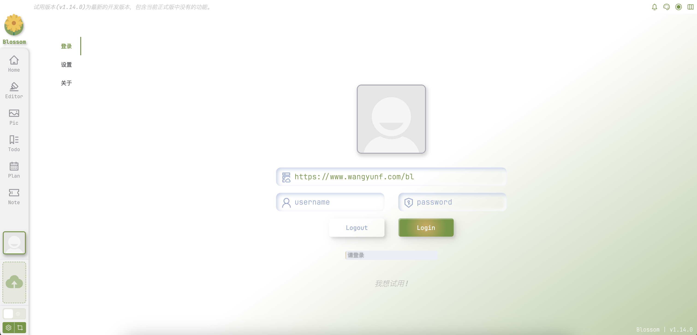
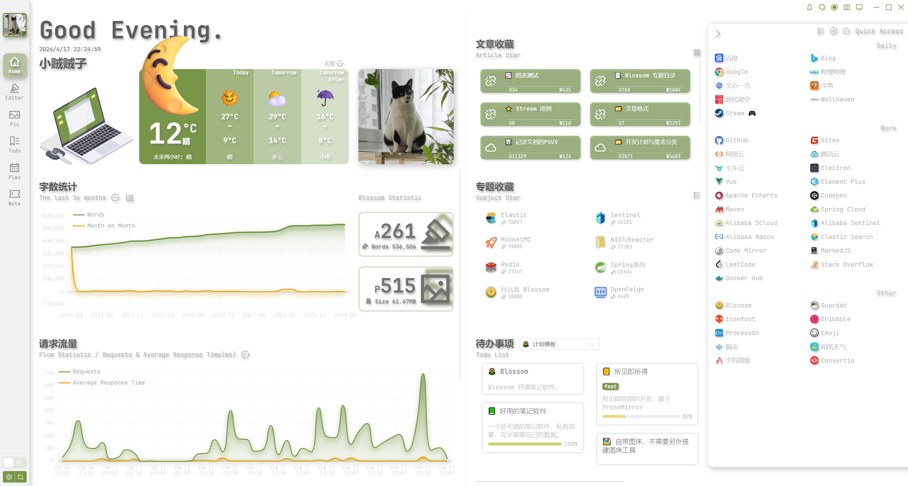
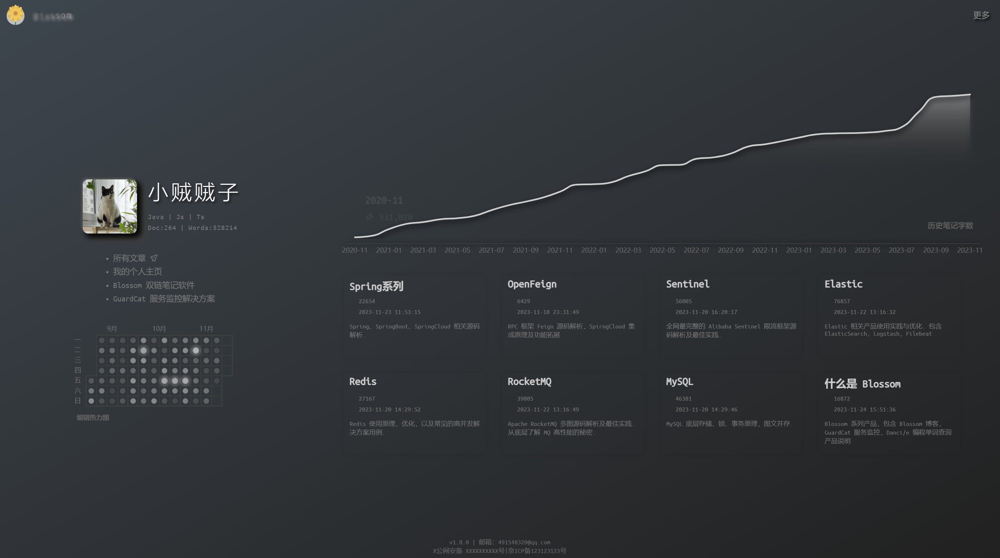

blossom
 项目首页
项目首页
Blossom是一款支持私有部署的云端双链笔记软件，用户可以将笔记、图片和个人计划安排保存在自己的服务器中，并在任意设备之间实时同步



 如何部署在线 blossom
如何部署在线 blossom
什么是 blossom
- Blossom 是一个支持私有部署的云端双链笔记软件，你可以将你的笔记，图片，个人计划安排保存在自己的服务器中，并在任意设备之间实时同步
功能列表
- 服务端 Docker 部署，客户端网页部署：部署在云服务器就是多端同步云笔记，部署在本地就是本地笔记。
- 文章图片保存、管理：不依赖任何对象存储，保存图片与文章的引用关系，一键导出并转换为本地笔记。
- 计划安排 / Todo List：创建计划与待办事项，一键导出为 Markdown，轻松形成一篇周报/月报。
- 多用户隔离：Blossom 允许创建多个账号，账号之间完全隔离，可与家人朋友共同使用、工作生活分开存储。
- 响应式博客 / 移动端支持：附带网页端博客，完善的文章上下线控制，登录博客即是一个移动客户端。
- 多项常用功能：主题设置，番茄钟，字数统计，字数折线图，编辑热力图，天气预报。